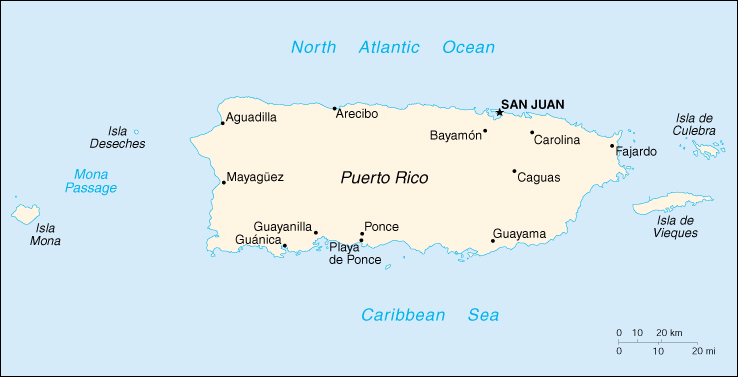

(commonwealth associated with the US)

|
Puerto Rico (commonwealth associated with the US) |
|
| Introduction Geography People Government Economy Communications Transportation Military Transnational Issues | ||
|  | ||
| Puerto Rico | Introduction | Top of Page |
| Background: | Discovered by Columbus in 1493, the island was ceded by Spain to the US in 1898 following the Spanish-American War. A popularly elected governor has served since 1948. In plebiscites held in 1967 and 1993, voters chose to retain commonwealth status. |
| Puerto Rico | Geography | Top of Page |
| Location: | Caribbean, island between the Caribbean Sea and the North Atlantic Ocean, east of the Dominican Republic |
| Geographic coordinates: | 18 15 N, 66 30 W |
| Map references: | Central America and the Caribbean |
| Area: |
total:
9,104 sq km
land: 8,959 sq km water: 145 sq km |
| Area - comparative: | slightly less than three times the size of Rhode Island |
| Land boundaries: | 0 km |
| Coastline: | 501 km |
| Maritime claims: |
exclusive economic zone:
200 NM
territorial sea: 12 NM |
| Climate: | tropical marine, mild; little seasonal temperature variation |
| Terrain: | mostly mountains, with coastal plain belt in north; mountains precipitous to sea on west coast; sandy beaches along most coastal areas |
| Elevation extremes: |
lowest point:
Caribbean Sea 0 m
highest point: Cerro de Punta 1,338 m |
| Natural resources: | some copper and nickel; potential for onshore and offshore oil |
| Land use: |
arable land:
4%
permanent crops: 5% permanent pastures: 26% forests and woodland: 16% other: 49% (1993 est.) |
| Irrigated land: | 390 sq km (1993 est.) |
| Natural hazards: | periodic droughts; hurricanes |
| Environment - current issues: | erosion; occasional drought causing water shortages |
| Geography - note: | important location along the Mona Passage - a key shipping lane to the Panama Canal; San Juan is one of the biggest and best natural harbors in the Caribbean; many small rivers and high central mountains ensure land is well watered; south coast relatively dry; fertile coastal plain belt in north |
| Puerto Rico | People | Top of Page |
| Population: | 3,937,316 (July 2001 est.) |
| Age structure: |
0-14 years:
23.73% (male 478,441; female 455,800)
15-64 years: 65.72% (male 1,242,245; female 1,345,421) 65 years and over: 10.55% (male 177,083; female 238,326) (2001 est.) |
| Population growth rate: | 0.54% (2001 est.) |
| Birth rate: | 15.26 births/1,000 population (2001 est.) |
| Death rate: | 7.77 deaths/1,000 population (2001 est.) |
| Net migration rate: | -2.13 migrant(s)/1,000 population (2001 est.) |
| Sex ratio: |
at birth:
1.06 male(s)/female
under 15 years: 1.05 male(s)/female 15-64 years: 0.92 male(s)/female 65 years and over: 0.74 male(s)/female total population: 0.93 male(s)/female (2001 est.) |
| Infant mortality rate: | 9.51 deaths/1,000 live births (2001 est.) |
| Life expectancy at birth: |
total population:
75.76 years
male: 71.28 years female: 80.48 years (2001 est.) |
| Total fertility rate: | 1.9 children born/woman (2001 est.) |
| HIV/AIDS - adult prevalence rate: | NA% |
| HIV/AIDS - people living with HIV/AIDS: | NA |
| HIV/AIDS - deaths: | NA |
| Nationality: |
noun:
Puerto Rican(s) (US citizens)
adjective: Puerto Rican |
| Ethnic groups: | white (mostly Spanish origin) 80.5%, black 8%, Amerindian 0.4%, Asian 0.2%, mixed and other 10.9% |
| Religions: | Roman Catholic 85%, Protestant and other 15% |
| Languages: | Spanish, English |
| Literacy: |
definition:
age 15 and over can read and write
total population: 89% male: 90% female: 88% (1980 est.) |
| Puerto Rico | Government | Top of Page |
| Country name: |
conventional long form:
Commonwealth of Puerto Rico
conventional short form: Puerto Rico |
| Dependency status: | commonwealth associated with the US |
| Government type: | commonwealth |
| Capital: | San Juan |
| Administrative divisions: | none (commonwealth associated with the US); there are no first-order administrative divisions as defined by the US Government, but there are 78 municipalities (municipios, singular - municipio) at the second order; Adjuntas, Aguada, Aguadilla, Aguas Buenas, Aibonito, Anasco, Arecibo, Arroyo, Barceloneta, Barranquitas, Bayamon, Cabo Rojo, Caguas, Camuy, Canovanas, Carolina, Catano, Cayey, Ceiba, Ciales, Cidra, Coamo, Comerio, Corozal, Culebra, Dorado, Fajardo, Florida, Guanica, Guayama, Guayanilla, Guaynabo, Gurabo, Hatillo, Hormigueros, Humacao, Isabela, Jayuya, Juana Diaz, Juncos, Lajas, Lares, Las Marias, Las Piedras, Loiza, Luquillo, Manati, Maricao, Maunabo, Mayaguez, Moca, Morovis, Naguabo, Naranjito, Orocovis, Patillas, Penuelas, Ponce, Quebradillas, Rincon, Rio Grande, Sabana Grande, Salinas, San German, San Juan, San Lorenzo, San Sebastian, Santa Isabel, Toa Alta, Toa Baja, Trujillo Alto, Utuado, Vega Alta, Vega Baja, Vieques, Villalba, Yabucoa, Yauco |
| Independence: | none (commonwealth associated with the US) |
| National holiday: | US Independence Day, 4 July (1776) |
| Constitution: | ratified 3 March 1952; approved by US Congress 3 July 1952; effective 25 July 1952 |
| Legal system: | based on Spanish civil code |
| Suffrage: | 18 years of age; universal; indigenous inhabitants are US citizens but do not vote in US presidential elections |
| Executive branch: |
chief of state:
President George W. BUSH of the US (since 20 January 2001); Vice President Richard B. CHENEY (since 20 January 2001)
head of government: Governor Sila M. CALDERON (since NA January 2001) cabinet: appointed by the governor with the consent of the legislature elections: US president and vice president elected on the same ticket for four-year terms; governor elected by popular vote for a four-year term; election last held 7 November 2000 (next to be held NA November 2004) election results: Sila M. CALDERON (PDP) elected governor; percent of vote - 48.8% |
| Legislative branch: |
bicameral Legislative Assembly consists of the Senate (28 seats; members are directly elected by popular vote to serve four-year terms) and the House of Representatives (54 seats; members are directly elected by popular vote to serve four-year terms)
elections: Senate - last held 7 November 2000 (next to be held NA November 2004); House of Representatives - last held 7 November 2000 (next to be held NA November 2004) election results: Senate - percent of vote by party - NA%; seats by party - PNP 19, PPD 7, PIP 1, other 1; House of Representatives - percent of vote by party - NA%; seats by party - PNP 30, PPD 20, PIP 1, other 3 note: Puerto Rico elects one nonvoting representative to the US House of Representatives; elections last held 7 November 2000 (next to be held NA November 2004); results - percent of vote by party - NA; seats by party - PPD 1 (Anibal ACEVEDO-VILA) |
| Judicial branch: | Supreme Court; Superior Courts; Municipal Courts (justices for all these courts appointed by the governor with the consent of the Senate) |
| Political parties and leaders: | National Democratic Party [Celeste BENITEZ]; National Republican Party of Puerto Rico [Luis FERRE]; New Progressive Party or PNP [Pedro ROSSELLO]; Popular Democratic Party or PPD [Hector Luis ACEVEDO]; Puerto Rican Independence Party or PIP [Ruben BERRIOS Martinez] |
| Political pressure groups and leaders: | Armed Forces for National Liberation or FALN; Armed Forces of Popular Resistance; Boricua Popular Army (also known as the Macheteros); Volunteers of the Puerto Rican Revolution |
| International organization participation: | Caricom (observer), ECLAC (associate), FAO (associate), ICFTU, Interpol (subbureau), IOC, WCL, WFTU, WHO (associate) |
| Diplomatic representation in the US: | none (commonwealth associated with the US) |
| Diplomatic representation from the US: | none (commonwealth associated with the US) |
| Flag description: | five equal horizontal bands of red (top and bottom) alternating with white; a blue isosceles triangle based on the hoist side bears a large, white, five-pointed star in the center; design influenced by the US flag, but based on the Cuban flag |
| Puerto Rico | Economy | Top of Page |
| Economy - overview: | Puerto Rico has one of the most dynamic economies in the Caribbean region. A diverse industrial sector has surpassed agriculture as the primary locus of economic activity and income. Encouraged by duty-free access to the US and by tax incentives, US firms have invested heavily in Puerto Rico since the 1950s. US minimum wage laws apply. Sugar production has lost out to dairy production and other livestock products as the main source of income in the agricultural sector. Tourism has traditionally been an important source of income, with estimated arrivals of nearly 5 million tourists in 1999. Prospects for 2001 are clouded by a probable slowing down in both the construction and tourist sectors and by increasing inflation, particularly in energy and food prices; estimated growth will be 2%. |
| GDP: | purchasing power parity - $39 billion (2000 est.) |
| GDP - real growth rate: | 2.8% (2000 est.) |
| GDP - per capita: | purchasing power parity - $10,000 (2000 est.) |
| GDP - composition by sector: |
agriculture:
1%
industry: 45% services: 54% (1999 est.) |
| Population below poverty line: | NA% |
| Household income or consumption by percentage share: |
lowest 10%:
NA%
highest 10%: NA% |
| Inflation rate (consumer prices): | 5.7% (2000 est.) |
| Labor force: | 1.3 million (2000) |
| Labor force - by occupation: | agriculture 3%, industry 20%, services 77% (2000 est.) |
| Unemployment rate: | 9.5% (2000) |
| Budget: |
revenues:
$6.7 billion
expenditures: $9.6 billion, including capital expenditures of $NA (FY99/00) |
| Industries: | pharmaceuticals, electronics, apparel, food products; tourism |
| Industrial production growth rate: | NA% |
| Electricity - production: | 16.76 billion kWh (1999) |
| Electricity - production by source: |
fossil fuel:
98.45%
hydro: 1.55% nuclear: 0% other: 0% (1999) |
| Electricity - consumption: | 15.587 billion kWh (1999) |
| Electricity - exports: | 0 kWh (1999) |
| Electricity - imports: | 0 kWh (1999) |
| Agriculture - products: | sugarcane, coffee, pineapples, plantains, bananas; livestock products, chickens |
| Exports: | $38.5 billion (f.o.b., 2000) |
| Exports - commodities: | pharmaceuticals, electronics, apparel, canned tuna, rum, beverage concentrates, medical equipment |
| Exports - partners: | US 88% (2000) |
| Imports: | $27 billion (c.i.f., 2000) |
| Imports - commodities: | chemicals, machinery and equipment, clothing, food, fish, petroleum products |
| Imports - partners: | US 60% (2000) |
| Debt - external: | $NA |
| Economic aid - recipient: | $NA |
| Currency: | US dollar (USD) |
| Currency code: | USD |
| Exchange rates: | the US dollar is used |
| Fiscal year: | 1 July - 30 June |
| Puerto Rico | Communications | Top of Page |
| Telephones - main lines in use: | 1.322 million (1997) |
| Telephones - mobile cellular: | 169,265 (1996) |
| Telephone system: |
general assessment:
modern system, integrated with that of the US by high-capacity submarine cable and Intelsat with high-speed data capability
domestic: digital telephone system; cellular telephone service international: satellite earth station - 1 Intelsat; submarine cable to US |
| Radio broadcast stations: | AM 72, FM 17, shortwave 0 (1998) |
| Radios: | 2.7 million (1997) |
| Television broadcast stations: | 18 (plus three stations of the US Armed Forces Radio and Television Service) (1997) |
| Televisions: | 1.021 million (1997) |
| Internet country code: | .pr |
| Internet Service Providers (ISPs): | 76 (2000) |
| Internet users: | 110,000 (2000) |
| Puerto Rico | Transportation | Top of Page |
| Railways: |
total:
96 km
narrow gauge: 96 km 1.000-m gauge, rural, narrow-gauge system for hauling sugarcane; no passenger service |
| Highways: |
total:
14,400 km
paved: 14,400 km unpaved: 0 km (1996) |
| Waterways: | none |
| Ports and harbors: | Guanica, Guayanilla, Guayama, Playa de Ponce, San Juan |
| Airports: | 28 (2000 est.) |
| Airports - with paved runways: |
total:
19
over 3,047 m: 3 1,524 to 2,437 m: 3 914 to 1,523 m: 7 under 914 m: 6 (2000 est.) |
| Airports - with unpaved runways: |
total:
9
914 to 1,523 m: 2 under 914 m: 7 (2000 est.) |
| Puerto Rico | Military | Top of Page |
| Military branches: | paramilitary National Guard, Police Force |
| Military - note: | defense is the responsibility of the US |
| Puerto Rico | Transnational Issues | Top of Page |
| Disputes - international: | none |
{kind=link}